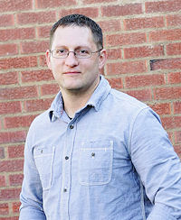

Greg Nielson | WDD 130
Hello! My name is Greg. I have recently transferred to Pathways / BYU-I from Weber State University, pursuing a Software Engineering BS. This is my third attempt at a degree. 25 years ago I started at Weber State, then life got busy with bills, work, kids, etc. and I didn't finish. 15 years ago I attended Western Governors University, then life happened again as I went through a divorce and I didn't finish. I started back at Weber State a year and a half ago but then decided to transfer to Pathways / BYU because we were struggling to keep up with tuition, but it was still important to me to finish.
I remarried two years ago to a sweet girl named Kristin and moved to North Salt Lake. Kristin has 5 kids - 18, 16, 14, 11, 9. Combined with my 5 kids - 22, 19, 17, 14, 9 - we make quite the gang lol Kristin is a school counselor at American Preparatory Academy in Draper.
I am an Escalations Engineer for an IT consulting / outsourcing company based in Utah called Executech. We provide IT services for organizations that either doesn't need "full-time" IT staff or want to augment their IT teams with additional help and expertise. For example, two of my clients are Davis County cities where I spend about 15 hours/wk, and I also spend 5 hours managing IT for a law firm and for a capital investment firm in SLC. I am also one of our technical instructors, currently teaching server hardware, virtualization, DNS, and Active Directory / Group Policy. The rest of the time I spend troubleshooting and fixing hardware/software and network issues escalated to me by our technical teams.
My Favorite Temples
-
Salt Lake
I love the history of this temple, as well as the art and layout of the inside. -
Payson
Married to my current wife in this temple - beautiful inside and out. -
Bountiful
Attended most often and a great source of comfort while going through divorce (even if it was closed during COVID :))